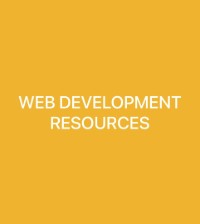

Kenneth Osaohenmwanta Omoruyi
About Me
My name is Kenneth Osaohenmwanta Omoruyi, i was born in benin city, Edo State, but i leave with my family in Accra, Ghana, And i am a student of BYU Pathway BYU IDAHO, i am Studying Software Development, Web & Computer Programming where i am learning HTML, CSS, and JavaScript. This course Building me For Greater Productivity.
I'm passionate about my study and i like traveling and learning new things.
🇬🇭 Accra Ghana is one of the english speaking country in West Africa. It is home to 33.79 million people. I'm currently located in Nigeria, and I'm pursuing my degree in Software Development, Web & Computer Programming to build a career in technology. I'm excited to contribute to the digital transformation happening across Africa.
Web Development Resources
Essential resources for web development that I use regularly:
- MDN Web Docs - Comprehensive documentation for HTML, CSS, and JavaScript
- W3Schools - Interactive tutorials and examples
- GitHub - Version control and project hosting
- Publishing - Deploy my final project online
- Group Study - Collaborate effectively with peers
These tools form the foundation of my web development workflow and help me create better, more accessible websites.